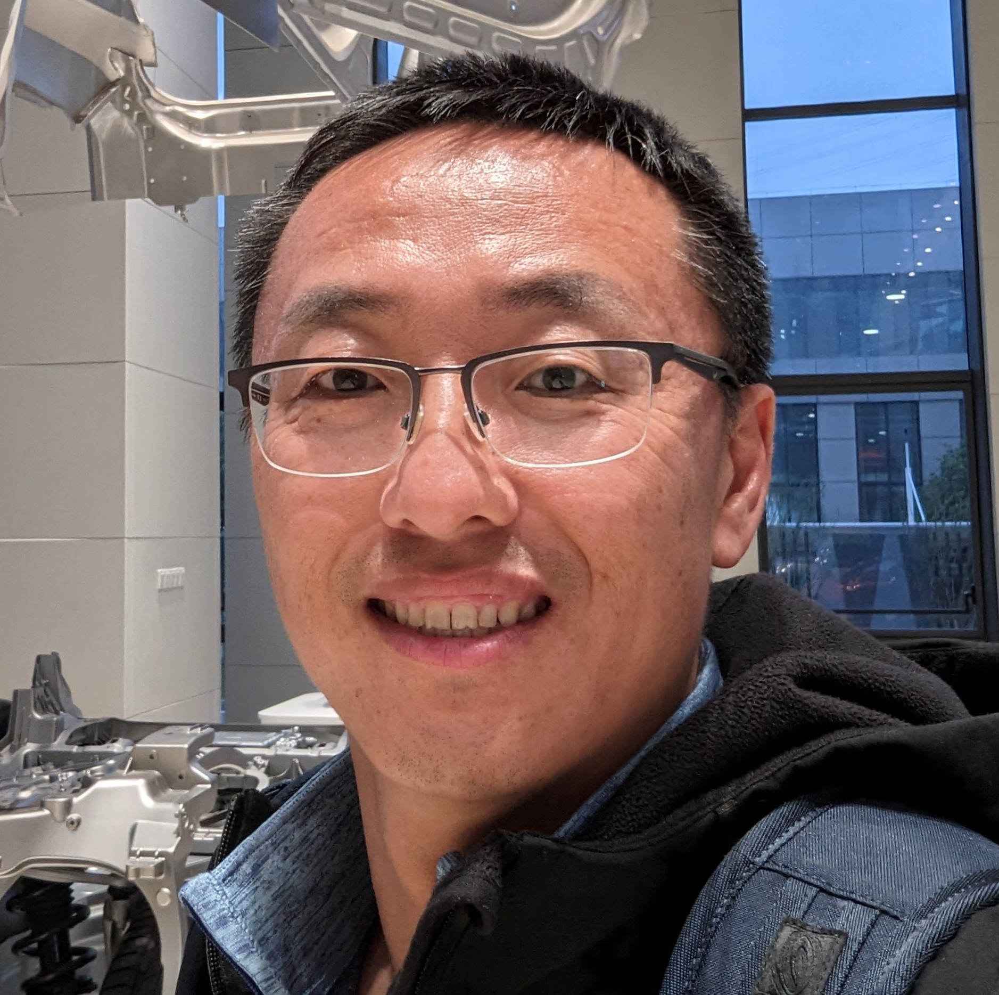

---
# Copyright 2024 seL4 Project a Series of LF Projects, LLC.
# SPDX-License-Identifier: CC-BY-SA-4.0
title: Keynotes for seL4 Summit 2024 announced
anchor: summit-2024-keynotes
---

<div class="row" style="margin-left:0px; margin-right:0px">
  <p>
    We are pleased to announce that the two keynotes for the <a href="../Foundation/Summit/2024">seL4 Summit 2024</a>
    will be <strong><a href="https://www.linkedin.com/in/darren-cofer-07824a5/">Darren Cofer</a></strong> from
    <strong><a href="https://www.collinsaerospace.com/">Collins Aerospace</a></strong> and
    <strong><a href="https://www.linkedin.com/in/quning/">Ning Qu</a></strong> from
    <strong><a href="https://www.nio.com/">NIO</a></strong>. Darren will talk
    about <a
    href="../Foundation/Summit/2024/abstracts2024.html#a-inspecta">Industrial
    Scale Proof Engineering for Critical Trustworthy Applications (INSPECTA)</a>
    and Ning about <a
    href="../Foundation/Summit/2024/abstracts2024.html#a-software-defined">seL4
    in Software-Defined Vehicles: Vision, Roadmap, and Impact at NIO</a>.
  </p>
  <p>
    
    <strong>Darren Cofer</strong> is a Principal Fellow at Collins Aerospace. He
    earned his PhD in Electrical and Computer Engineering from The University of
    Texas at Austin. His area of expertise is developing and applying advanced
    analysis methods and tools for verification and certification of
    high-integrity systems. His background includes work with formal methods for
    system and software analysis, the design of real-time embedded systems for
    safety-critical applications, and the development of nuclear propulsion
    systems in the U.S. Navy. Dr. Cofer has served as principal investigator on
    many government-sponsored research programs, developing and using formal
    methods for verification of safety and security properties. He served on
    RTCA committee SC-205 developing new certification guidance for airborne
    software (DO-178C) and was one of the developers of the Formal Methods
    Supplement (DO-333). He is currently a member of SAE committee G-34
    developing certification guidance for the use of machine learning
    technologies onboard aircraft.
  </p>
  <p>
    
    <strong>Ning Qu</strong> is a veteran in the autonomous driving industry and
    a seasoned technical leader with extensive experience in operating systems,
    high-performance runtime frameworks, and hardware-software co-design.
    Currently, Ning serves as the Senior Director of the SkyOS team at NIO,
    where he spearheads the development of SkyOS—a comprehensive suite of
    platform software (including hypervisor, operating systems, and middleware)
    for Software Defined Vehicles, showcased at NIO IN 2023. Before joining NIO,
    Ning managed Waymo's ML Runtime team, playing a pivotal role in SF
    Rider-only driverless launch on the Jaguar EV. At Baidu, he built the Apollo
    OS from the ground up, establishing the foundation for the Apollo project.
    Notably, he architected and developed Cyber RT and led Baidu's fully
    driverless launch in 2020. Ning holds a B.S. and Ph.D. from Peking
    University and has served as a researcher at CMU.
  </p>
</div>